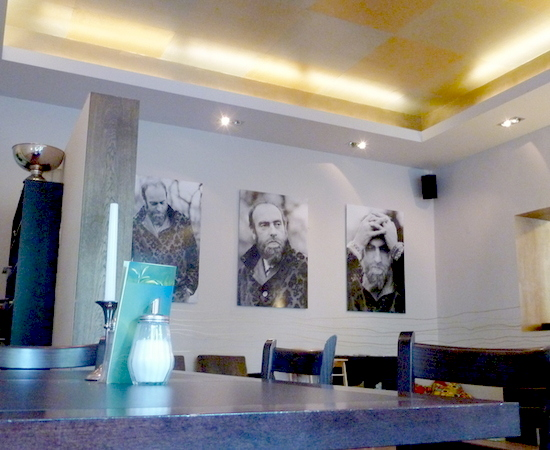

So finally I was on the plane to Germany. It was surreal. I did my best to doze for a while. Nine hours didn't seem long at all and I was at the Berlin Airport looking for my friend Lisa (we always have trouble finding each other and this was no exception) with three huge suitcases at my side (more heavy crap to lift). I intend never to travel heavy like that again but it was a special case, most of this stuff will stay in Germany. My anxiety about explaining why I had so much of Lisas e-bay ordered photography stuff, plus three laptops and a full sized desktop computer were dispelled when I sailed right through customs.
So once we found each other and ran with all that heavy crap a couple of blocks (ouch) to the illegally parked car we were off to her house in the tiny little town of Päwesin (Pev-a-zine) about 30-40 minutes from Berlin. On the way we stopped to look at some windmills. Germany is full of them. Each one is a very impressive and huge machine.
Lisa bought this huge old house in ruins not far from Berlin. Very very cheap, lots of space, lots of land and lots and lots and LOTS of work. I wonder if she bit off more than she could chew. I have been helping her (naturally) but it sometime seems like one backbreaking job after another (and lots of heavy crap to lift). I suppose I will finally get my break and a chance to really heal up when I return to Florida to continue my trip across the U.S.
And oh yeah. I did one other interesting thing beside lifting heavy objects. Lisa has a friend who is a farmer and sometimes gets a bit short handed so with some reluctance I got drafted to drive one of his tractors one day. You have seen pictures of the machine that picks up stuff in the field and throws it into a trailer being pulled along side. I drove the tractor that pulled that tailor with about 15 minutes instruction from Lisa (none of the farmers spoke English). There was actually more street driving than field driving since we had to carry the loads back to another field (I actually got lost on my first trip back)
Life is strange, I got rid of my car because I don't like driving and here I was driving this tractor with a huge trailer around the streets of a foreign country.
Who would uh thunk it !!!
OK Back to the Potsdam parks and palaces. The pictures are
Lastly it happens that the Pope (in German PAPST ) was visiting Germany at the same time I was. I was too busy to accept his invitation but he was very understanding about it (all that heavy crap to lift you know).
There was a lot of commotion and media attention. And we saw this banner but didn't quite get the meaning of it. We can't find these words in the German dictionary (maybe slang) so if anyone can help please do. I can only guess it's a warm greeting and welcome to his holyness from this German gay rights group
loading...

We had breakfast at a cafe called Hundertwasser cafe.
Hundertwasser was a famous architect, He must have been great because those are pictures of him on the back wall looking very disturbed and serious
loading...
Lisa has also had some appointments in Potsdam where there is a huge park called Sanssouci which translates as "without concerns", meaning "without worries. It has several ornate palaces of King Frederick the Great who was a big fan of the Rococo style of decoration.
In Potsdam we saw a few interesting things on our way to the palaces. The first is this sign. The name looked familiar somehow thought I never found out exactly what it was about
It has not been ALL work however (just mostly work). We have made a short trip to Berlin. She is participating in a debating club to enhance her speaking skills. The first debate of the evening is in English, the next in German. Quite an interesting group of people these debaters. Mostly students of the university that sponsors the club and all way way younger than us.
We went a bit early and did some walking in Berlin. Here are some pictures from our walk there earlier in the day:
Dispatch # 1: Simplifying your life sure is complicated
24 September 2011
Most of you know I made a big change in my life. I have to admit it, I seriously miscalculated how much there was to do to close out the old life. I had set a hard deadline for myself by buying a plane ticket to Germany (well in advance) and arranging for the end of the lease on my apartment. The last two weeks prior to that date were hectic beyond belief.
First of all I really wanted to finish my project to scan all my old photos, a project I had been working on bit by bit for years. I finished just a couple of weeks before the deadline.
Then there were a million small decisions to make and each one of those little decisions and actions took a little bit (or a lot) of time. Keep it, throw it away, sell it, or give it away and to who. I shipped stuff to my brother in California, to Edda in Puerto Rico, sold stuff on e-bay and took a load to Salvation Army and filled the dumpster at the apartment. I lifted things I had absolutely no business lifting by myself (should have got help) and I was really feeling it in my back. I figured (wrongly as it turns out) that I could relax when I got done. And while it was a little messy I did get done, one hour before it was time to go to the airport.
In a way it was good because if I had a soft deadline I would surely have dragged it out for weeks longer. But I can't say I would recommend this method, it really was way way too stressful.
Late Addition: Here is the tractor with the trailer I drove.
So that's it for now. I have been so very busy (mostly
lifting heavy crap) it's been a bit hard to find time to get this info published but
I hope you enjoy it.
In Päwesin we were greeted by her big German Shepard. He has an impressive baritone bark but he really is a big teddy bear with an insatiable appetite for play. He constantly brings toys hoping you will play tug-a-war or throw them for him to chase.
loading...
loading...
I have posted a video clip of Rocky learning to play Frisbee: